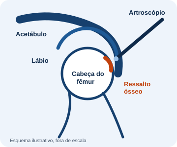

Quadril do jovem e do esporte
Uma cirurgia feita por pequenos cortes, com uma câmera, para tratar problemas dentro da articulação do quadril.
O que é
Na artroscopia, o cirurgião faz pequenas incisões ao redor do quadril. Por uma delas entra o artroscópio, uma câmera fina que mostra o interior da articulação num monitor. Pelas outras entram instrumentos delicados para tratar o que foi encontrado.
Por não abrir a articulação, é chamada de cirurgia minimamente invasiva. Nem todo problema do quadril se trata por artroscopia: a indicação é sempre individual.

Indicações
Um formato diferente do fêmur ou do acetábulo faz os dois ossos se tocarem de forma anormal durante o movimento, causando dor, principalmente ao flexionar e girar o quadril. Pelo consenso internacional de Warwick, o diagnóstico exige a soma de sintomas, sinais no exame físico e achados de imagem: o formato do osso na radiografia, sozinho, não basta.
O lábio é um anel de cartilagem na borda do acetábulo que ajuda a vedar e estabilizar a articulação. Pode se lesionar, muitas vezes junto com o impacto. Na artroscopia, ele pode ser reparado (suturado) ou, quando necessário, tratado de outra forma.
A artroscopia costuma ser considerada depois de avaliação médica completa e, em geral, de uma tentativa de tratamento sem cirurgia, como fisioterapia e ajuste das atividades. Quem já tem artrose avançada ou displasia importante pode precisar de outro tipo de tratamento.
Como é feita
Recuperação
A recuperação é gradual e acompanhada pela fisioterapia. Nas primeiras semanas, costuma-se usar muletas, com carga e movimentos liberados aos poucos. O ritmo de cada fase é definido pelo cirurgião e pelo fisioterapeuta, de acordo com o que foi feito na cirurgia e com a evolução de cada paciente.
Retorno ao esporte
O retorno ao esporte é por etapas: força, controle do movimento e, depois, gestos específicos da modalidade. O momento de voltar depende da evolução, não apenas do tempo passado. Não há garantia de resultado: a conversa sobre expectativas faz parte da consulta.
O que dizem os estudos
Resultados de estudos são médias de grupos e não garantem o resultado de cada pessoa. Esta página é informativa e não substitui a consulta.
Voltar à página inicial